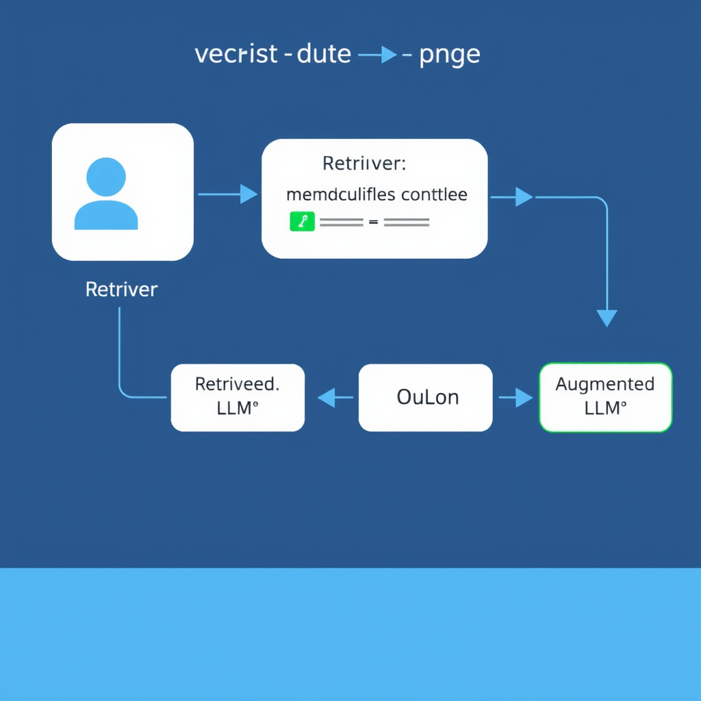
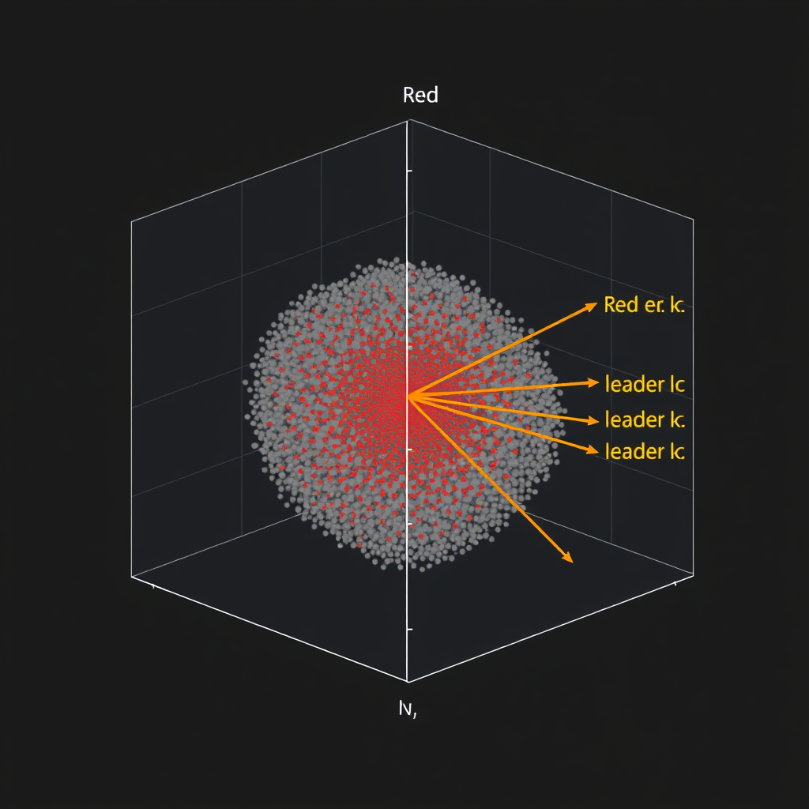
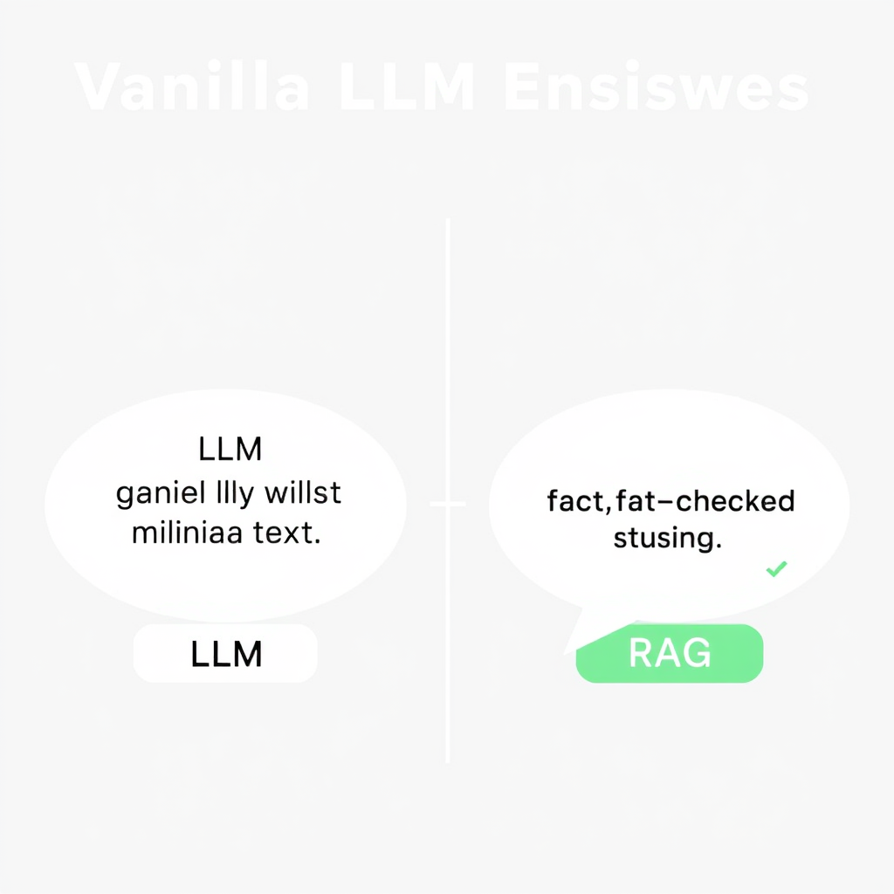

Introduction to Retrieval‑Augmented Generation
Large language models (LLMs) have demonstrated impressive capabilities in generating fluent text, but their knowledge is bounded by the data seen during pre‑training and the static nature of that knowledge. Retrieval‑Augmented Generation (RAG) bridges this gap by coupling a generative model with an external knowledge source that can be queried at inference time. The result is a system that can produce up‑to‑date, factual, and domain‑specific responses while preserving the linguistic fluency of modern LLMs.
In this post we walk through the anatomy of a RAG pipeline, explore the design choices that affect performance, and examine where RAG shines—and where it still struggles. By the end, you should have a concrete mental model that lets you design, prototype, and evaluate your own RAG solutions.
What is RAG and Why It Matters
RAG is a two‑stage architecture:
- Retrieval – Given a user query, a retriever selects a small set of relevant documents (or passages) from a large corpus.
- Generation – A generative LLM consumes the retrieved texts together with the original query and produces the final answer.
Why is this combination valuable?
| Benefit | Explanation |
|---|---|
| Freshness | The retriever can query a corpus that is continuously updated (e.g., a product catalog, scientific papers), keeping the system’s knowledge current without re‑training the LLM. |
| Factual grounding | By conditioning generation on concrete source snippets, the model is less likely to hallucinate unsupported facts. |
| Parameter efficiency | Instead of scaling the LLM to memorize billions of facts, the system offloads factual storage to a searchable index, reducing the required model size. |
| Domain adaptation | A generic LLM can be specialized to niche domains simply by swapping the underlying document store. |
These advantages have turned RAG into a go‑to pattern for enterprise Q&A, chat assistants, and any application that demands both language fluency and factual reliability.
Core Components of a RAG System
A functional RAG pipeline consists of four tightly coupled modules:
- Document Corpus – The raw knowledge base (e.g., PDFs, web pages, code repositories). It must be pre‑processed into a consistent textual representation.
- Embedding / Indexing Engine – Converts each document (or chunk) into a dense vector and stores it in a vector store that supports efficient similarity search.
- Retriever – Takes a query, embeds it using the same encoder, and returns the top‑k nearest vectors (often 3‑10) along with their source texts.
- Generator – A decoder‑only or encoder‑decoder LLM that receives a prompt containing the original query and the retrieved snippets, then emits the final answer.
Optional but common auxiliary components include:
- Reranker – A cross‑encoder that re‑scores the initial retrieved set to improve relevance.
- Metadata Filter – Allows constraint‑based retrieval (e.g., date range, language, document type).
- Post‑processor – Performs citation formatting, answer verification, or policy enforcement.
Understanding how each piece interacts is essential for diagnosing bottlenecks and for tailoring the system to a specific use case.
Retrieval Strategies and Vector Stores
Sparse vs. Dense Retrieval
| Strategy | Typical Encoder | Strengths | Weaknesses |
|---|---|---|---|
| BM25 / TF‑IDF | Token‑level statistics | Interpretable, works well on exact keyword matches | Poor at semantic matching, sensitive to phrasing |
| Dense Retrieval (Bi‑encoders) | Sentence‑transformers, OpenAI embeddings, Mistral‑Embedding | Captures semantic similarity, robust to paraphrase | Requires large training data for domain‑specific encoders; index size can be large |
| Hybrid | Combination of BM25 scores and dense similarity | Balances lexical precision with semantic recall | More complex scoring pipeline |
Vector Store Choices
| Store | Open‑source / Cloud | Key Features |
|---|---|---|
| FAISS | Open‑source | GPU‑accelerated indexing, IVF, HNSW, PQ compression |
| Milvus | Open‑source (cloud options) | Distributed sharding, built‑in metadata filters |
| Pinecone | Managed SaaS | Automatic scaling, latency SLAs, metadata‑aware queries |
| Weaviate | Open‑source + SaaS | Graph‑style schema, hybrid (BM25 + vectors) out‑of‑the‑box |
| Qdrant | Open‑source + cloud | HNSW index, payload filtering, easy Rust‑based client |
When choosing a store, consider:
- Scale – Number of documents and expected query throughput.
- Latency – Real‑time chat often demands sub‑200 ms retrieval.
- Update Frequency – Some stores support incremental upserts; others require full re‑indexing.
- Budget & Ops – Managed services reduce DevOps overhead but add recurring cost.
Generation Models and Prompt Design
Model Families
| Model | Size (Params) | Typical Use‑Case |
|---|---|---|
| GPT‑3.5 / GPT‑4 (OpenAI) | 6 B – 175 B | High‑quality natural language, few‑shot prompting |
| LLaMA‑2 / Mistral | 7 B – 70 B | Open‑source alternatives, fine‑tunable for domain adaptation |
| Claude (Anthropic) | Proprietary | Safety‑oriented responses, instruction following |
| T5‑XXL | 11 B | Encoder‑decoder style, convenient for seq2seq tasks |
The generator does not need to be the largest model available; the retrieved context reduces the amount of world knowledge the model must internalize. In practice, a 7 B model can outperform a 175 B model that receives no external grounding.
Prompt Templates
A robust prompt isolates the retrieved evidence and makes the task explicit. A common template is:
You are an expert assistant. Use only the information provided in the excerpts below to answer the question. Cite the source IDs after each statement.
Question: {user_query}
Sources:
[1] {retrieved_text_1}
[2] {retrieved_text_2}
...
Answer:
Key design principles:
- Clear role definition – “You are an expert assistant” steers the model toward factual tone.
- Citation instruction – Encourages the model to reference the source IDs, which aids downstream verification.
- Length control – Include only the top‑k most relevant snippets (usually 3‑5) to stay within the model’s context window.
- Few‑shot examples (optional) – Providing one or two Q&A pairs can improve consistency, especially for smaller models.
End‑to‑End RAG Workflow
Below is a step‑by‑step walkthrough of a typical inference request:
-
Pre‑processing
- User submits queryQ.
- Text is normalized (lower‑casing, Unicode cleanup) and tokenized for the retriever encoder. -
Query Embedding
- The same encoder used for indexing (e.g.,all‑mpnet‑base‑v2) mapsQ→ vectorv_q. -
Vector Search
-v_qis sent to the vector store; top‑k nearest neighbor vectors are returned along with their document IDs. -
Reranking (optional)
- A cross‑encoder (e.g.,bert‑base‑cross‑encoder) scores each candidate using the full query–document pair.
- The highest‑scoringk'passages (oftenk' ≤ k) are kept. -
Prompt Construction
- Retrieved passages are concatenated into the prompt template, respecting the LLM’s context limit (e.g., 8 k tokens for GPT‑4). -
Generation
- The LLM generates the answer, optionally streaming tokens back to the client for a responsive UI. -
Post‑processing
- Extract citation markers, verify that each cited source actually appears in the answer, and optionally run a factuality filter (e.g., a separate classifier). -
Response Delivery
- Return the final answer plus a list of source URLs or IDs for transparency.
A visual diagram often helps readers, but the textual flow above captures the essential steps required for implementation.
Use Cases and Applications
| Domain | Example Application | RAG Benefits |
|---|---|---|
| Enterprise Knowledge Bases | Internal help‑desk chatbot that answers policy questions using the latest HR documents. | Keeps answers aligned with constantly updated policy PDFs. |
| Scientific Research | Literature‑review assistant that pulls relevant abstracts from PubMed and synthesizes a concise summary. | Guarantees citations and reduces hallucination on recent findings. |
| E‑commerce | Product recommendation assistant that retrieves product specs and reviews before generating a personalized suggestion. | Enables up‑to‑date inventory info without re‑training the model. |
| Legal | Contract analysis tool that fetches relevant clauses from a repository and drafts a compliance summary. | Provides traceable evidence for each legal claim. |
| Software Development | Code‑assistant that searches a codebase (or Stack Overflow) for similar snippets before generating a new function. | Improves correctness by grounding in actual code patterns. |
These scenarios illustrate how RAG can be the connective tissue between raw information stores and generative AI, delivering both relevance and reliability.
Limitations, Challenges, and Ethical Considerations
- Hallucination despite grounding – If the retrieved snippets are irrelevant or contradictory, the generator may still fabricate content. Robust retrieval and reranking are essential but not a panacea.
- Latency – Vector search, especially on large corpora, adds milliseconds to each request. Optimizations (e.g., IVF‑PQ, GPU‑accelerated FAISS) and caching strategies are often required for real‑time chat.
- Index Freshness – Continuously ingesting new documents without breaking query consistency is non‑trivial. Incremental indexing pipelines (e.g., using Milvus or Pinecone upserts) mitigate but do not eliminate the problem.
- Metadata Leakage – Exposing raw source passages can unintentionally reveal proprietary or sensitive information. Implementing access controls and content redaction is mandatory for many enterprises.
- Bias Propagation – The retriever mirrors biases present in the underlying corpus; the generator can amplify them. Auditing both the document set and the retrieval scores is a best practice.
- Evaluation Complexity – Traditional metrics (BLEU, ROUGE) do not capture factual correctness. Retrieval‑augmented benchmarks such as RAG‑QA, KILT, and OpenDomainQA provide more relevant signals but require careful setup.
Addressing these challenges often involves a combination of engineering (e.g., hybrid retrieval, caching) and policy (e.g., data governance, human‑in‑the‑loop verification).
Future Trends and Emerging Research
- Hybrid Retrieval Models – Combining sparse lexical scores with dense embeddings at inference time (e.g., ColBERT‑v2) to improve both recall and precision.
- Multi‑Modal RAG – Extending the paradigm to images, audio, or video embeddings, enabling systems that retrieve and generate across modalities (e.g., “show me the diagram that explains X”).
- Dynamic Indexing with LLM‑Generated Summaries – Using an LLM to create concise embeddings for newly ingested documents on the fly, reducing the need for separate encoders.
- Reinforcement Learning for Retrieval – Training the retriever with RL signals derived from downstream generation quality, aligning the two modules more tightly.
- Neuro‑Symbolic RAG – Integrating symbolic reasoning (e.g., knowledge graphs) as an intermediate retrieval layer, allowing the generator to perform logical inference on retrieved facts.
- Privacy‑Preserving Retrieval – Techniques such as encrypted vector search (e.g., Secure Hamming distance) and federated indexing aim to keep raw documents hidden from the inference service.
These directions suggest that RAG will evolve from a static pipeline into a more adaptive, multi‑modal, and privacy‑aware ecosystem.
Conclusion and Next Steps
Retrieval‑Augmented Generation offers a pragmatic route to combine the expressive power of modern LLMs with the factual rigor of searchable knowledge bases. By dissecting its architecture—corpus preparation, vector indexing, retrieval, generation, and post‑processing—you can now map each component to the tools and constraints of your own projects.
Getting started checklist
- Define the corpus – Gather, clean, and chunk the documents you want the system to know.
- Choose an encoder – Start with a proven bi‑encoder


